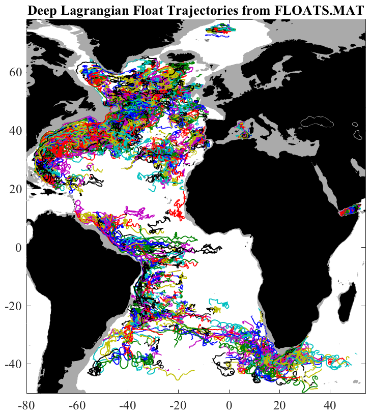

ABOUT_FLOATS Historical dataset of eddy-resolving subsurface floats. _______________________________________________________________________  _______________________________________________________________________ FLOATS.MAT is a matfile containing historical eddy-resolving subsurface float data from the World Ocean Circulation Experiment (WOCE) Subsurface Float Data Assembly Center (WFDAC), available online at http://wfdac.whoi.edu/ ... or ... ftp://ftp.whoi.edu/pub/users/woce-ssfdac/ together with some supplementary datasets provided by individual PIs. LOAD FLOATS loads the structure FLOATS, with the following fields: floats.about Pointer to this document floats.experiments Experiment names {83 x 1 cell} floats.expid Experiment id number [1469 x 1 array] floats.id Float id number [1469 x 1 array] floats.dt Sample interval in days [1469 x 1 array] floats.num Date in DATENUM format {1469 x 1 cell} floats.lat Latitude {1469 x 1 cell} floats.lon Longitude {1469 x 1 cell} floats.t Temperature in centigrade {1469 x 1 cell} floats.cv Velocity u+iv in cm/s {1469 x 1 cell} NUM, LAT, LON, T, and CV are cell arrays, with one drifter per cell. Within each cell, the time NUM proceeds uniformly, i.e. without jumps. However, note that trajectories may include some gaps, marked by INFs. Use FLOATFILL to fill these gaps with linear interpolation. A number of routines are available in JLAB to work directly with such cell arrays, see JCELL. In particular, CELLPLOT will plot such data. After 'load floats, type 'use floats' to map the structure fields into named variables in the workspace--id, num, lat, lon, etc. The experiment names are found by experiments(expid(100)), for example, which returns the experiment name of the 100th float trajectory. To generate the above figure of the dataset, type 'about_floats --f'. To convert the cell arrays into one long column vector, with a NAN separating each float, type 'cell2col(num,lat,lon,t,cv);'. FLOATS.MAT is distributed as a part of JDATA, a supplement to the software toolbox JLAB, and is available at http://www.jmlilly.net. __________________________________________________________________ Float experiments A brief summary of the 33 different experiments is as follows. # Experiment PI Type Data Span Source ------------------------------------------------------------- 1 abaco Leaman RAFOS 1989--1994 DAC 2 acuri Rossby RAFOS 1997--2000 DAC 3 acwwp Bower RAFOS 1996--2000 DAC 4 amuse Bower RAFOS 1993--1995 DAC 5 canig Ambar RAFOS 1997--1999 DAC 6 ebasn Price SOFAR 1984--1992 DAC 7 gusrex Owens SOFAR 1980--1985 DAC 8 ifmib Zenk RAFOS 1990--1994 DAC 9 kapex Boebel RAFOS 1997--1999 DAC 10 kdbe Boebel RAFOS 1992--1996 DAC 11 kpxwh Richardson RAFOS 1997--1999 DAC 12 lde Rossby SOFAR 1978--1979 DAC 13 lsuri Prater RAFOS 1996--1997 DAC 14 mode Rossby SOFAR 1972--1976 DAC 15 nefbas Owens SOFAR 1986--1989 DAC 16 noatl Rossby RAFOS 1993--1995 DAC 17 prelde Rossby SOFAR 1975--1985 DAC 18 semmed Richardson RAFOS 1993--1995 DAC 19 sitel Owens SOFAR 1982--1985 DAC 20 tasof Schmitt SOFAR 1989--1993 DAC 21 topo Ollitrault SOFAR 1983--1989 DAC 22 urigs Rossby RAFOS 1984--1985 DAC 23 urisyn Rossby RAFOS 1988--1990 DAC 24 wbc Bower RAFOS 1994--1997 DAC 25 wdbe Hogg RAFOS 1992--1998 DAC 26 wsub Price SOFAR 1991--1993 DAC 27 labsea Brandt RAFOS 2004--2006 PI 28 redsox Bower RAFOS 2001--2003 PI 29 exp Bower RAFOS 2003--2008 PI 30 mater Gascard RAFOS 1997--1998 PI 31 sofargos Gascard RAFOS 1994--1995 PI 32 esop Gascard RAFOS 1996--1998 PI 33 pomme Gascard RAFOS 2000--2001 PI The first column is the float experiment ID number in floats.expid, while the second column is a short experiment name, also listed in floats.experiments. "DAC" indicates the data was obtained from http://wfdac.whoi.edu/, and "PI" indicates it was obtained directly from the PI. For the WFDAC floats, sometimes wfdac.whoi.edu lists multiple PIs; here we show only the first. This includes all RAFOS and SOFAR from WFDAC apart from two, "trpac" and "shbas" (Tropical Pacific and Shikoku Basin) which are rather small, and also the only two outside of the Atlantic sector. __________________________________________________________________ Dataset creation For completeness, the m-file ABOUT_FLOATS also contains the processing steps used in the creation of the WFDAC portion of FLOATS.MAT. If you wish to do this yourself, with JLAB on your search path, 'about floats --create' will create the FLOATS.MAT dataset by reading in the original data, after these have been downloaded from the WFDAC and unzipped. Specifically we use the data files ending in 'asc.zip'. You'll need to make sure to put the directory containing the files on your Matlab search path using ADDPATH, e.g. 'addpath ~/Data/wocedac'. It is important that the containing directory have the name 'wocedac'. Note that the velocity CV in FLOATS.MAT is computed from latitude, longitude, and time using LATLON2UV. Note that creation of the PI-provided datasets is not accomplished here. This is because the heterogeneous nature of those data files required a number of different processing steps. The source data and processing scripts for these datasets are available upon request. __________________________________________________________________ See also JDATA, ABOUT_DRIFTERS. 'about_floats --f' generates the sample figure shown above. Usage: about_floats about_floats --create __________________________________________________________________ This is part of JLAB --- type 'help jlab' for more information (C) 2014--2015 J.M. Lilly --- type 'help jlab_license' for details